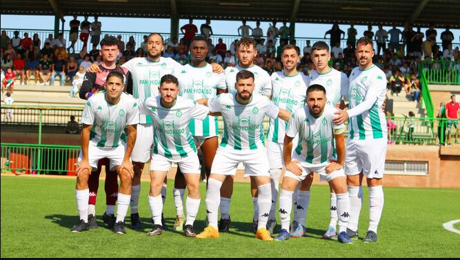

TocheAlex
Estadio Municipal Huércal
CARACTERISTICAS ESTADIO:
Nuestro nuevo punto de encuentro se sitúa en la zona noreste de Madrid, junto a la M-40 y en el área de influencia del aeropuerto e IFEMA. La capacidad aproximada del nuevo estadio es de 68.000 espectadores, el 96% a cubierto. El club ha decidido primar la amplitud, la comodidad y la seguridad de los seguidores frente a la opción de un mayor aforo. Con el objetivo de que el acceso a las localidades y el disfrute de las mismas sea lo más satisfactorio posible se ha aumentado la distancia entre filas. También se han habilitado accesos adecuados para los aficionados con movilidad reducida. La ubicación de las bocanas y la ordenación del tráfico dentro del estadio garantiza la máxima seguridad a los espectadores. La disposición del graderío propicia que los aficionados de las diferentes zonas estén muy cerca del terreno de juego. En todas las ubicaciones el aficionado de las primeras filas tiene la oportunidad de vivir el partido más encima que en el Vicente Calderón salvo en el Lateral Oeste, en el que las distancias son parecidas a las del Calderón. El punto más próximo a la línea de cal está en el córner noroeste dónde el graderío se sitúa a apenas a 5.89 metros del terreno de juego. El estadio cuenta con 1.000 plazas de parking dentro del propio edificio. Además, existen otras 3.000 plazas en el exterior. Los días de partido estas plazas están disponibles exclusivamente para los aficionados que han adquirido tarjetas de parking. La parcela del nuevo estadio es de 88.150 metros cuadrados. Esto se traduce en que el club cuenta con un perímetro propiedad de la propia entidad en el que se han puesto en marcha dos Fan zones, una junto al Fondo Sur y otra junto al Fondo Norte. La de la zona Sur con conciertos y espacios de restauración pensados para los jóvenes que se acomodan en esta zona del estadio. En el norte, el espacio está dedicado a familias. En esta zona, precisamente, se sitúa la Grada familiar y sin humos (hay 19.000 localidades en el estadio sin humos). Se trata de un modelo de experiencia nueva en España. Frente a la fachada oeste del estadio se sitúan las placas del Paseo de Leyendas, un homenaje a los jugadores que han disputado 100 o más partidos oficiales con nuestro club. En el suroeste de la plataforma ondea la bandera en homenaje a nuestra afición. Se trata de una bandera de 338 m2, la más grande jamás izada en España. Muy cerca, un espectacular corpóreo con el lema 'Coraje y Corazón' permite a los aficionados hacer fotografías de una de las zonas más icónicas de nuestro nuevo estadio.